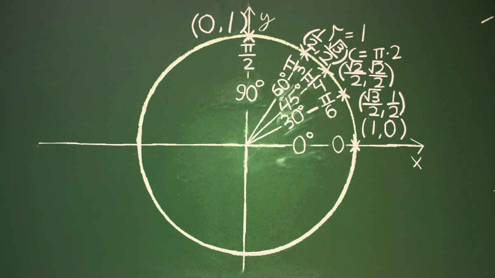

Нельзя просто сидеть и зубрить формулы, когда вы только-только начинаете учить тему. Нужно вернуться к прошлым темам и учить их до отличного уровня, только так можно понимать формулы и знать что они значат. Количество материала в этой теме зашкаливает, так что лучше их понимать и выводить формулы, а не зубрить десятки сложных формул.
1. Не запоминайте формулы, надеясь только на это, лучше стройте модель, в котором можно всё понятно.
2. Вам нужно научиться строить самостоятельно тригонометрическую окружность, для этого постоянно практикуйтесь.
3. Не обязательно зубрить каждую формулу, лучше их быстро выводить. Если не можете, значит вы что-то пропустили на прошлых уроках. Если вы всё таки научитесь выводить, но оно у вас очень сложно выходит, то не расстраивайтесь, это наоборот хорошо, с каждой практикой становится легче. И с каждым разом будет всё проще, быстрее, точнее.
Все подробности есть в нашем сборнике. Множество полезных советов!